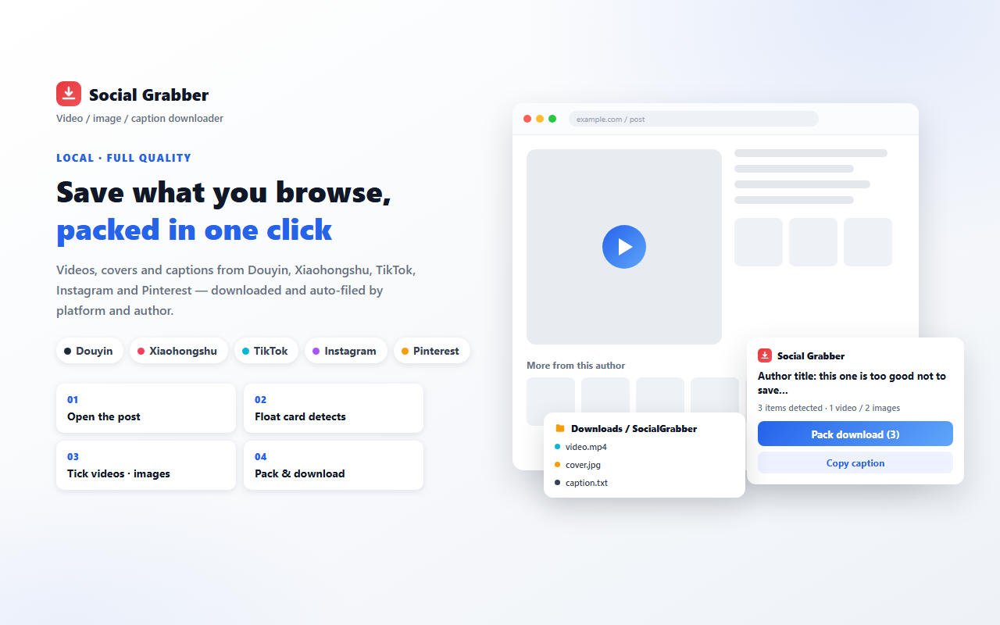
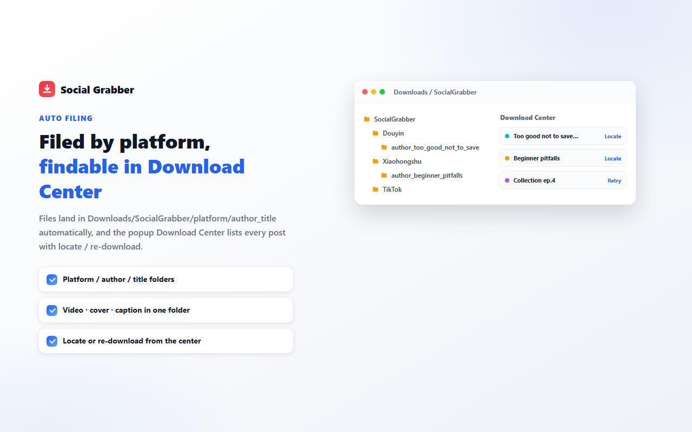
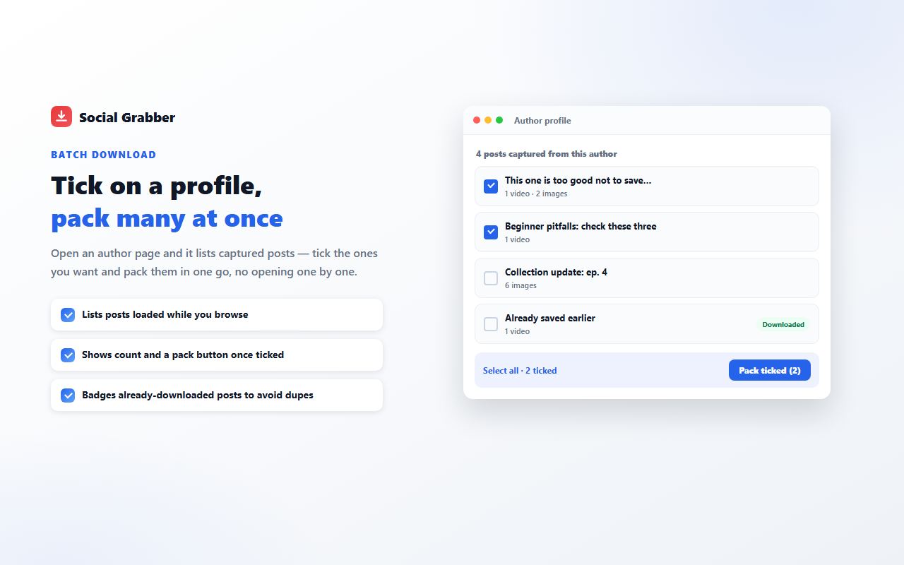

How to download TikTok videos and photo posts with a Chrome extension
Short answer: a paste-a-link TikTok downloader can usually hand you one video file, and it breaks in two specific places — photo posts (the swipeable image carousels) come back as nothing, and the address it resolves for you is signed and short-lived, which is where the 403 comes from. A browser extension works on the tab you already have open, so one click saves the video or every image in the photo set, the cover, and the caption as a .txt — into one folder named after the author and the post. The 403 disappears as a side effect: the extension takes the address your own player just streamed from.
Add to Chrome — it's free What the extension does
Free · No account · No server of its own · Everything runs in your browser
The three ways people save a TikTok post
1. Paste-a-link download websites. You copy the share link, paste it into a form, wait, download one file. Two problems are structural rather than incidental. A photo post — the kind you swipe through — has no single video to return, so those sites either fail or give you only the first image. And the media address they resolve carries a token that expires within minutes: the file you click ten seconds later is already refused by the CDN. Your link, meanwhile, has gone to whoever runs that site, which is also where the pop-ups live.
2. The TikTok app's own save button. Good when you just want one clip on your phone. You get the version the app decides to write — frequently with TikTok's own mark and an outro frame — and the caption text has to be copied separately. Everything then has to be transferred to the computer again, in a flat Downloads folder.
3. A browser extension that reads the page you are on. Because it runs where the post is already rendered, it sees what TikTok already loaded for you: the video source the player is using, each image in a photo set, the cover, the caption. No link copying, no third-party server in the loop, one folder per post.
| Paste-a-link site | App save button | Chrome extension | |
|---|---|---|---|
| Video of the post | Usually | Yes | Yes |
| All images in a photo post | Rarely | Manual, one by one | Yes, in one click |
| Caption and hashtags as a text file | No | No | Yes — caption .txt |
| Files organized by author and title | No | No | Yes |
| Not blocked by an expired signed address | No | Yes | Yes — saves what the player streamed |
| Several already-loaded posts at once | No | No | Yes — tick and pack |
Step by step: pack one post
- 1
Install from the Chrome Web Store
Search for Social Grabber or use the button above. Nothing to register, no key, no sign-in step.
- 2
Open the post in your browser
Browse TikTok normally. Video posts are at
tiktok.com/@handle/video/<post-id>, photo posts attiktok.com/@handle/photo/<post-id>. You can also stay on the For You feed — see the next step. - 3
The card follows what you are watching
A card appears on the page, bottom-left by default, and you can drag it anywhere — the position is remembered. On the For You feed the URL doesn't change when you swipe, so the card instead watches which video is actually playing and switches to that post. On a profile grid it deliberately does not chase the video that previews under your mouse; hovering is not the same as choosing a post.
- 4
Tick what you want, or take everything
A photo post lists its images individually, so you can keep three of five. Video posts list the video and the cover.
- 5
Click “Pack & download” — or press
Ctrl+Shift+SCommand+Shift+Son a Mac. The shortcut is registered by the extension itself, nothing to configure in browser settings. You get a progress line, then a count of what saved and what didn't; individual failures can be retried without re-running the whole pack.

What you get on disk
By default the files go to:
Downloads/SocialGrabber/TikTok/<author>/<publish-date>_<title>_<post-id>/
The author folder uses the display name you see on the page. The post id is part of the work folder name on purpose: two posts from the same account that happen to share a caption would otherwise land in one folder and overwrite each other. A post with no caption at all is named after its id, which also keeps bulk packs from collapsing into a single file. If no publish date can be read, the folder simply starts with the title.
Inside that folder, one file per item: a video post gives you <title>.mp4 plus <title>_cover.jpeg; a photo post gives you <title>_image1.jpg, <title>_image2.jpg and so on. File names stay readable — no (1) unless two items in the same pack genuinely collide.
Alongside them is <title>_caption.txt: the caption exactly as the post carries it (hashtags included), the author, the source URL, then the direct address of every media file with a line above each one saying what it is — cover, image 3, video via the player's own address. Failed links stay in that list too, so you can paste one into the address bar by hand. The .txt ends with a short prompt you can send to any video-capable AI chat together with the file if you want that post's structure broken down; it is plain text sitting in a folder, the extension contains no AI and calls no model.
Both the root folder and the TikTok subfolder name are editable in the extension popup, so packs can land in an existing project directory instead.

Why TikTok downloaders 403 — and what happens instead
This is the failure worth understanding, because it is not bad luck and no paste-a-link site can fix it. The media address that comes back in TikTok's own interface data does not contain a real token. It contains a placeholder, and the client-side player exchanges that placeholder for a working token before it asks the CDN for the file. A site that just resolves the address and redirects your browser to it is handing you a URL the CDN will always refuse — hence a 403, a zero-byte file, or a download that "works" on the site's own machine and not on yours.
The extension inverts that: it doesn't guess a URL, it uses the one your tab already streamed successfully. It looks for it in four places, in order — the address currently loaded in the playing <video> element; the streaming request the player itself made, captured as it happens (the URL only; the video is never fetched twice just to look at it); the browser's own record of resource requests, reading backwards for the most recent one; and finally the token exchange from your own cookies. Only if all four come up empty does it fall back to the interface address, and the other mirrors TikTok provides are kept as a second and third try.
Practical consequence: if it plays in your tab, it can be saved. And the corollary is just as true — if TikTok won't play the post for you at all (a region block, or a login wall), the extension has nothing to save either. It never pretends to have downloaded something the page refused to show.
Several posts at once — and the honest limit
Two page types get a list. On a profile (tiktok.com/@handle) the card shows “N posts by this author”; on a playlist page (tiktok.com/@handle/playlist/<id>) it shows “N captured in this collection”. The rows are the posts whose full media data this tab has already received while you scrolled — unlike Xiaohongshu, where a profile only ships thumbnails and packing has to open each loaded card, on TikTok the data is already in hand, so ticking and packing saves directly without opening anything.
Which posts belong to this profile is decided by the account's @handle, not by its display name — the two routinely disagree, and a post whose handle can't be read is skipped rather than listed. Same rule on playlists: only rows tagged while this playlist page was open. Posts you already saved carry a "Downloaded" badge, so a re-pack doesn't duplicate them.
And the line we deliberately do not cross: the extension never paginates, never crawls an account, and never fetches posts you haven't scrolled to. Account-level scraping is exactly the behaviour TikTok's risk systems watch, and it puts your own account at risk for a batch of files — that trade isn't worth it, and a tool that promises "download all 800 videos from this profile" is making that bet with your login. Scroll the profile yourself, then tick what loaded. A post detail page shows only that post's card, no list.

When the card says it can't identify this post
TikTok rewrites its page structure a few times a year, and sometimes the card can see posts it captured but not the one you're looking at. It then says so instead of quietly downloading something else. Three things fix it in practice, in this order: ① tap the player so the video actually plays (the playing video is the strongest evidence the card has), ② swipe one post away and back, ③ press F5 to reload the page. If it still won't resolve, the console under [Social Grabber] says which step failed — "found no playing video" and "found the video but not its identity" are different bugs, and telling them apart is what makes the fix short rather than guesswork.
Frequently asked questions
Why does a TikTok downloader site give me a 403 or an empty file?
The video address TikTok's own interface hands out carries a placeholder token instead of a real one, and the CDN rejects it — the site you pasted the link into gets the same rejection you do, or resolves the address and sends you to an expired one minutes later. The extension does not use that address. It takes the address the player in your tab actually pulled the video from, which by definition is one that works. If the video plays, it can be saved.
Does it download TikTok videos without a watermark?
It saves the media the page itself loaded, without re-encoding it and without adding a watermark of its own. The address TikTok's interface marks as a watermarked download is only kept as a last-resort mirror, tried after the one the player used. If the only variant a given post exposes carries TikTok's own mark, that is what lands in the folder — the extension will not invent a cleaner file than the page was served.
Can I download every video on a TikTok profile?
Only the posts your own browsing has already loaded. On a profile page the card lists the posts whose data this tab already received, you tick the ones you want and pack them in one go. It never paginates, never crawls the account, and never fetches posts you have not scrolled to. Scroll more if you want more rows, then pack.
Where do the files go?
By default into Downloads/SocialGrabber/TikTok/<author>/<publish-date>_<title>_<post-id>/, with a <title>_caption.txt next to the media. The post id is part of the folder name so two posts with the same caption cannot overwrite each other, and a post with no caption at all is named after its id. The root folder and the TikTok subfolder name can both be changed in the extension popup.
Do I need to be logged in to TikTok for this to work?
The extension never asks for platform credentials and has no account of its own. But it can only save what the page rendered for you, so where TikTok itself demands a login, or redirects your region to a landing page, log in in that tab the way you normally would. Nothing about the extension changes what TikTok decides to show you.
Is it free? Does it upload my data?
Free, no sign-up, no account system. There is no server behind it: detection, parsing and saving all happen inside your browser and no page content is uploaded. The only outbound requests are the plain downloads for the exact files you chose to save. The permissions it asks for are downloads, storage and opening files it downloaded, plus per-domain access limited to the platforms it supports and their media CDNs — no access to every site.
Does it work on Douyin, Xiaohongshu, Instagram or Pinterest too?
Yes — the same extension covers Douyin, Xiaohongshu, TikTok, Instagram and Pinterest, with a bilingual interface that follows the page language. It does not record live streams and does not export comments on any of them.
Who wrote this: I built Social Grabber, the extension used in the examples above, and it is the product this page links to. I tried to keep the comparison honest about what the other options are genuinely good at. Copyright of anything you save stays with its original author or the platform — save only what you are entitled to keep.